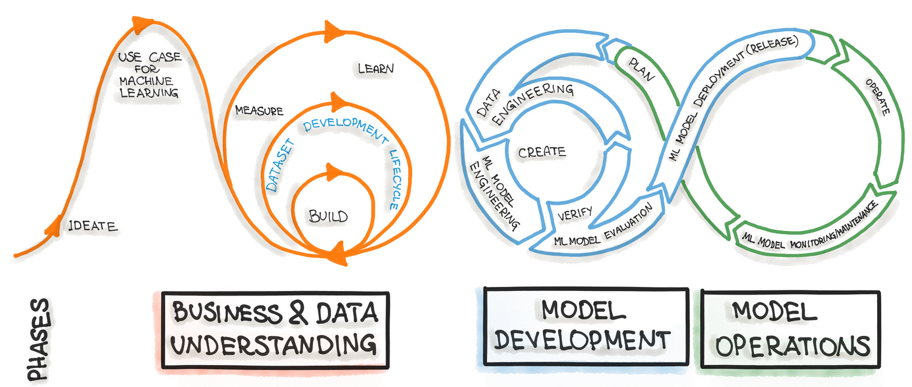

AI/ML Lifecycle Management using Agentic AI
ABSTRACT
In modern AI systems, the deployment of machine learning models into production environments poses serious difficulties in terms of performance maintenance, transparency, and facilitating quick change adaptability. While traditional MLOps pipelines automate deployment and monitoring, they frequently lack proactive diagnostics, contextual awareness, and traceability throughout the whole model lifecycle. This project suggests a new framework for managing the AI lifecycle that is driven by a semantic knowledge manager and agentic AI. The system makes use of modular agents, such as a Drift and Anomaly Detection Agent, Suggestive Action Agent, Report Generation Agent, and Chatbot Agent, which work together to detect data and concept drift, monitor model health, and recommend or condense remedial activities. All lifecycle artifacts, such as validation tests, alarms, performance measurements, upstream dependencies, and SHAP-based explainability results, are stored in a centralized knowledge graph that facilitates semantic reasoning and full traceability.
Model stability is regularly evaluated by the framework using statistical validation methods (e.g., Wasserstein Distance, KS Test) and supporting supervised machine learning models. A conversational interface makes it easier for stakeholders and data scientists to get comprehensive reports that are automatically generated.
Results from experiments show how well the system works to spot performance issues, decipher underlying causes, and direct practical fixes--all while maintaining auditability and compliance. The framework for scalable, explicable, and self-governing AI lifecycle governance is established by this work.
1. INTRODUCTION
Machine Learning (ML) models are not autonomous artifacts--they are part of a bigger system that must be constructed, monitored, maintained, and continuously improved. This procedure is referred to as ML Model Lifecycle Management as shown in Figure 1.1, and it spans all steps from data ingestion to model retirement. As ML systems are implemented in dynamic, real-world situations, their performance can decline over time due to data drift, concept drift, or changes in user behaviour. Hence, controlling the entire lifetime is critical to assure the dependability, relevance, and fairness of deployed models. Traditional ML lifecycle management is frequently manual, scattered across tools and teams, and lacks real-time adaptation. This makes it inefficient, error-prone, and difficult to scale in fast-paced or mission-critical applications. In response, the discipline has witnessed a growing interest in MLOps (Machine Learning Operations), which offers DevOps-like methods for ML operations. However, even MLOps platforms require continual human oversight and orchestration.
Figure 1.1: AI/ML Lifecycle Management
1.1 Background and Motivation
From experimental prototypes to production-grade solutions, artificial intelligence (AI) systems have quickly advanced across a variety of industries, including manufacturing, healthcare, finance, and energy. Machine learning (ML) models, which are at the core of these systems, rely on robust lifecycle management--the methodical handling of models from inception to retirement--as well as algorithmic sophistication to be effective. Data collection and preprocessing, model selection and training, evaluation, deployment, monitoring, and retraining are the usual phases of the AI/ML model lifecycle. This lifetime is becoming more continuous and iterative as AI systems are used in more dynamic, real-world settings. Continuous updates and strict control are required due to factors like data drift, model deterioration, compliance requirements, and shifting user behavior. Conventional lifecycle management techniques are frequently labor-intensive, disjointed, and manual. By fusing ML workflows with DevOps concepts, MLOps has evolved to simplify some of these issues, but it still mostly relies on human specialists to make choices, manage exceptions, and modify processes in response to changing system conditions. At the same time, new avenues for intelligent orchestration have been made possible by the development of agentic AI, which refers to autonomous, goal-driven software entities that are able to perceive their surroundings, make decisions, and carry out actions. These agents are increasingly capable of handling complex tasks, responding to feedback, and cooperating across domains by utilizing reasoning frameworks and large language models (LLMs). One viable route to self-managing AI systems is the integration of such agents into the AI lifecycle. As AI usage grows, a number of lifecycle management pain points emerge:
- Expandability Barriers: The scalability of AI systems across teams and projects is restricted by manual processes for deployment, monitoring, and adjustment.
- Delayed Responsiveness: Degradation or drift may go unnoticed for extended periods of time, which could result in loss of performance or skewed output forecasts.
- Lack of Interoperability: Tools used throughout the lifecycle frequently don't integrate well, which leads to ineffective transitions and broken processes.
- High Human Dependency: Compliance checks, retraining, and re-deployment still need human-in-the-loop supervision.
These challenges inspired the exploration of Agentic AI as a foundation for transforming AI lifecycle management from a reactive, human-led process to a proactive, self-adaptive system. The following primary goals serve as the motivation for this thesis:
- To use collaborative software agents that can act intelligently with little supervision in order to automate and streamline the phases of the AI lifecycle.
- To increase system resilience and responsiveness by giving agents the ability to recognize and react to problems such as operational abnormalities, data drift, and model underperformance.
- To provide a scalable, modular architecture that offers reusable parts for the creation of cross-domain AI and allows agents to function alone or cooperatively.
- Will use real-world case studies in predictive maintenance and ESG report automation to illustrate the viability of an agentic methodology.
In order to bridge the gap between automation and autonomy in AI model lifecycle management, this study combines the intelligence of agent-based systems with the structure of MLOps.
1.2 Problem Statement
The majority of enterprises still have major difficulties with post-deployment monitoring and maintenance of machine learning models, even with notable improvements in MLOps and model deployment infrastructure. A model functions in dynamic situations where user behavior, system limitations, and underlying data distributions might alter over time once it is put into production. These modifications frequently result in data drift, inconsistent predictions, latency problems, or poor model performance, all of which can harm user confidence and business results. Conventional monitoring systems lack contextual awareness and flexibility and are either rule-based or metric-specific (e.g., tracking accuracy or response time). Furthermore, they don't offer useful insights; instead, they notify data scientists of a problem but let human specialists determine the underlying cause and the best course of action. Delays, inefficiencies, and higher operating expenses result from this. Ensuring a machine learning model's long-term performance, dependability, and fairness becomes crucial after it is put into production. The majority of real-world machine learning systems, however, function in non-stationary contexts, where variations in user behaviour, system loads, and data distributions can eventually lead to a decline in performance. The goal of this project is to create a lifecycle management system based on agentic AI that can recognize problems in machine learning models on its own, including:
- Model Performance: Model performance refers to the ability of a machine learning model to generate accurate and reliable predictions when evaluated on unseen data. Performance is typically quantified using evaluation metrics that vary depending on the type of task--such as accuracy, precision, recall, F1-score, ROC AUC for classification tasks, or RMSE, MAE, and R² for regression tasks.
- Data Drift: Changes in feature distributions or target concept that affect model predictions.
- Concept Drift: Concept drift refers to the phenomenon where the statistical properties of the target variable, which a model is trying to predict, change over time in unforeseen ways. This presents a critical challenge in machine learning systems, especially those deployed in dynamic environments where data generation processes are non-stationary.
- Explainability Test: SHAP (SHapley Additive exPlanations) is a powerful framework for interpreting the output of machine learning models. It is based on cooperative game theory, specifically the Shapley values, which provide a theoretically sound method to quantify the contribution of each feature to a model's prediction.
- Latency Spikes: Increased response time in serving predictions due to infrastructure or model complexity issues.
- Prediction Inconsistency Issues: Unstable predictions for similar or identical inputs, signaling model instability.
Figure 1.2: Validation Tests
The solution makes use of intelligent agents that keep an eye on deployed models, identify anomalies, and--above all--produce actionable recommendations that data scientists can comprehend and implement. These recommendations are supported by domain expertise, statistical analysis, and past model behaviour.
1.3 Objective
Designing and implementing an agentic AI-based system to manage the lifecycle of machine learning models in production is the main goal of this thesis is shown below Figure 3. It focuses on identifying and resolving model health issues like latency spikes, performance degradation, data and concept drift, and inconsistent predictions.
To identify problems with ML model performance
Use real-time evaluation metrics (such as accuracy, precision, recall, and AUC) to spot performance declines and automatically compare them to predetermined standards from the training and validation stages.
Figure 1.3: Main Objectives
1.4 Scope and Limitation
The post-deployment stage of the machine learning lifecycle, when preserving model performance, dependability, and interpretability is crucial, is the main emphasis of this thesis. The scope consists of:
Using Agentic AI to Track Lifecycles
Creation of task-specific, autonomous agents that monitor model health metrics and offer useful information without continual human involvement.
Model Health Aspects Addressed
- Performance parameters: Tracking real-time evaluation parameters such F1-score, recall, accuracy, and precision.
- Data and Concept Drift Detection: The process of identifying and categorizing changes in data and model behavior using statistical methods (such as PSI, KS-test, and residual drift).
- System Usage Monitoring: Recording and examining request volumes, hardware usage, and inference latency.
- Explainability and Stability Analysis: Using SHAP/LIME to identify changes in the logic of the model and highlight predictions that don't add up.
Recommendations for Action
In addition to identifying issues, the system makes recommendations for actions such as retraining, model rollback, feature recalibration, or performance tweaking that are both comprehensible and pertinent to the domain.
Design with the User in Mind
Intended for ML developers and data scientists, emphasizing practical results that fit seamlessly into MLOps processes.
Applications
Real-world datasets and applications, such as fraud detection, ESG reporting, and predictive maintenance, are used to illustrate this.
- Predictive Maintenance
Predict potential machine failures by analyzing sensor data such as vibration, temperature, and pressure. ML models forecast breakdowns to minimize downtime. Lifecycle management ensures models remain accurate as machinery ages and new data arrives.
- Quality Control and Defect Detection
Automate visual inspection or sensor-based detection to classify products as defective or non-defective. Continuous monitoring helps detect model performance degradation caused by changes in production processes or raw materials.
- Process Optimization
Optimize manufacturing parameters (e.g., temperature, pressure, speed) to maximize yield and efficiency. Lifecycle management tracks model recommendations and ensures adaptation to process changes over time.
- Supply Chain and Inventory Management
Forecast demand and optimize inventory levels by analyzing historical and real-time data. ML models adjust to market variations and seasonality. Lifecycle management monitors data freshness and model accuracy to prevent stock issues.
Limitations
Despite the system's capabilities, certain boundaries and constraints are acknowledged:
- No Retraining of the Model Automatically: The system does not automatically retrain or redeploy models to uphold accountability and stop unexpected behavior, even while suggesting actions are offered.
- Restricted to Learning Models Under Supervision: Regression and classification supervised machine learning models are now supported by the framework. It is outside the purview to extend to unsupervised systems or reinforcement learning.
- Explainability Reliant on Outside Libraries: They use interpretability tools like SHAP and LIME, which have limits for deep or complicated ensemble models and their own processing overhead.
- Coverage of Partial Drift: Although statistical drift is detected by the framework, latent idea drift might not be fully captured if label feedback is delayed or missing.
- Assumptions for Infrastructure and Tooling: Deployment logs, inference outputs, and system utilization data are assumed to be accessible by the suggested system. Additional preparation may be necessary for organizations without MLOps tooling.
- Limitations on Scalability in Early Prototype: If the prototype isn't further tuned, it can have trouble scaling in high-frequency inference settings or multi-model contexts.
2. LITERATURE REVIEW
2.1 Overview of ML Techniques
The term Machine Learning Operations (MLOps) describes a collection of procedures and tools designed to automate and oversee the lifespan of machine learning (ML) models in operational settings. Inspired by classic DevOps, it is specifically designed to tackle the special difficulties of machine learning (ML) systems, which integrate models, data, and code.
Key components of MLOps
- Data Management: From data collection, preprocessing, and versioning to metadata maintenance, MLOps starts with strong data management. Among the methods are:
- Data lineage tracking
- Schema validation and monitoring
- Real-time data drift detection
- Model Development and Training: Ensures reproducibility and efficiency using:
- Experiment tracking frameworks (e.g., MLflow, TFX)
- Hyperparameter optimization tools (e.g., Optuna, Ray Tune)
- Containerization (e.g., Docker)
- Model Versioning and Registry: Tools such as Weights & Biases, DVC (Data Version Control), and MLflow Model Registry play a crucial role in managing model artifacts and ensuring reproducibility of machine learning experiments.
- Validation and Testing:
- Unit and pipeline testing
- Continuous statistical validation (e.g., KS-Test, Z-Test)
- Shadow deployment and canary testing
- Deployment and Serving:
- Model serving via TensorFlow Serving, TorchServe, or KFServing
- Deployment strategies: rolling updates, blue-green deployments, A/B testing
- Monitoring and Observability
- Monitoring of performance metrics (accuracy, latency)
- Data and concept drift detection (e.g., JS Divergence, Wasserstein Distance)
- Automated alerting mechanisms
- Automation and Orchestration:
- Pipeline orchestration tools (e.g., Kubeflow, Apache Airflow, Dagster)
- CI/CD workflows with Jenkins, GitHub Actions, GitLab CI
- Governance and Compliance:
- Model audit trails
- Compliance support (e.g., GDPR, HIPAA)
- Explainability and model documentation
Modern Enhancements in MLOps
- Agentic AI: Intelligent agents automate lifecycle decisions like retraining or rollback.
- Knowledge Manager Integration: Semantic storage of model state, test results, and recommendations.
- Multi-model Management: Simultaneous management of thousands of models with lineage and health checks.
Comparison of AI/ML Lifecycle Management: With vs Without Agentic AI
| Aspect | Without Agentic AI | With Agentic AI |
|---|---|---|
| Orchestration | Manual or script-based orchestration; limited scalability | Autonomous agents coordinate tasks dynamically |
| Monitoring | Periodic monitoring via dashboards; often delayed detection | Continuous and proactive monitoring by Drift/Anomaly Agents |
| Actionability | Relies on manual intervention; slower response to issues | Suggestive Action Agent recommends retraining, tuning, or rollback |
| Explainability | Basic static reporting; limited stakeholder interaction | Chatbot Agent offers conversational explanations and summaries |
| Traceability | Disconnected logs, hard to reconstruct root cause | Knowledge Manager maintains linked records across components |
| Scalability | Challenging with growing models and data | Scales via modular and parallel agent-based architecture |
| Automation Level | Low to moderate; depends on pre-defined rules | High; agents operate autonomously using semantic reasoning |
2.2 Related Work
2.2.1 Machine Learning Models Monitoring in MLOps Context: Metrics and Tools (2023)
In their article "Machine Learning Models Monitoring in MLOps Context: Metrics and Tools" published in the International Journal of Interactive Mobile Technologies, Bodor, Hnida, and Daoudi (2023) provide a thorough analysis of machine learning model monitoring within the MLOps paradigm. Despite notable advancements in artificial intelligence, the rate of industrialization and production deployment of machine learning projects is still alarmingly low. This study fills a major gap in machine learning deployment procedures. By combining continuous integration (CI), continuous deployment (CD), and introducing ML-specific concepts like continuous training (CT) and continuous monitoring (CM), the authors situate their work within the larger MLOps paradigm, which applies DevOps principles to machine learning model management.
The study was prompted by the realization that many machine learning initiatives have insufficient monitoring methods, which compromises the sustainability, dependability, and quality of models used in real-world settings. The study reiterates that ML model development doesn't stop with deployment but necessitates ongoing monitoring to ensure long-term reliability and effectiveness, building on seminal work highlighting "Hidden Technical Debt in Machine Learning Systems" from 2015, which first articulated the challenges of continuous machine learning application usage.
Lifecycle Monitoring and Automation
In order to construct a comprehensive model that includes the phases of data extraction, validation, preparation, model training, assessment, deployment, and integration, the paper offers a complex framework for viewing ML model monitoring as a transversal phase across the MLOps lifecycle. An iceberg model is used to illustrate the various levels of their monitoring framework. Visible components only make up a small portion of the intricate monitoring requirements; hidden features include data quality, model performance, and ecosystem health metrics that are critical to system dependability. The authors identify key monitoring stages across data preparation, modeling/deployment, and production environment phases, and they classify monitoring metrics into gauge metrics (recording system values), delta metrics (calculating variances between measurements), and cumulative metrics (tracking counter evolution over time).
By integrating AutoML, the automation component is addressed by lowering the technical complexity of algorithm selection and hyperparameter optimization, supporting automated retraining procedures, and providing warning features that inform administrators of threshold deviations or serious issues. With a focus on automated metadata collection and versioning capabilities across data, code, hyperparameters, pipelines, and monitoring results to support the iterative nature of MLOps, the monitoring system includes data quality profiling, model performance evaluation, usage efficiency metrics, and business KPIs.
Comparative Studies and Limitations
Using a radar chart methodology to assess cost, integration capabilities, data drift monitoring, model comparison features, and automatic alerting systems, the study offers a thorough comparative analysis of ML monitoring tools, differentiating between open-source and proprietary solutions. Their analysis, which includes well-known MLOps tools like MLflow, Kubeflow, DVC, Great Expectations, and Seldon Alibi-Detect, shows that proprietary tools typically offer broader feature coverage than open-source alternatives. They also suggest that organizations can attain comprehensive coverage by strategically combining multiple open-source tools rather than depending solely on one proprietary solution.
The study does, however, recognize a number of shortcomings, such as the need for additional validation through full end-to-end architecture implementation in practical settings and the need for more sophisticated AI-based monitoring methods and standardized protocols that are applicable to different industries. The lack of empirical performance evaluations of suggested tool combinations in production environments, the paper's primary focus on technical monitoring aspects without a thorough examination of organizational factors influencing MLOps adoption, and the authors' acknowledgement that their work is a foundational framework rather than a fully validated solution--noting that the MLOps landscape is changing quickly and that updates are necessary to stay relevant--are some of the paper's limitations.
3. METHODOLOGY
The design and implementation of an agentic AI-based system that independently monitors, validates, and manages deployed machine learning models across many model health metrics is the main focus of the technique used in this study. This entails identifying problems including latency/resource bottlenecks, explainability inconsistencies, data or idea drift, and performance degradation and offering insightful, understandable recommendations for remedial action.
3.1 Validation Test
3.1.1 Model Performance
If metrics such as RMSE or MAE increase over time, it may indicate model drift or data inconsistency. R² reduction could suggest model underfitting or feature shifts as given in above Table 3.1.
Model Performance (Classification)
| Metric | Formula / Description | Interpretation |
|---|---|---|
| Mean Absolute Error (MAE) | MAE = \(\frac{1}{n}\sum|y_i-\hat{y}_i|\) | Average absolute difference between predicted and actual values. |
| Mean Squared Error (MSE) | MSE = \(\frac{1}{n}\sum(y_i-\hat{y}_i)^2\) | Gives higher weight to larger errors due to squaring. |
| Root Mean Squared Error (RMSE) | RMSE = \(\sqrt{\text{MSE}}\) | Has same unit as target variable. Useful for interpretability. |
| R-squared (R²) | R² = \(1-\frac{SS_{\text{res}}}{SS_{\text{tot}}}\) | Explains proportion of variance in target predicted by model. |
| Adjusted R-squared | Penalized R² for number of predictors used | More accurate when comparing models with different features. |
| Mean Absolute Percentage Error (MAPE) | MAPE = \(\frac{100\%}{n}\sum\left|\frac{y_i-\hat{y}_i}{y_i}\right|\) | Shows error as percentage; can be misleading when \(y_i \approx 0\). |
Interpretation in Lifecycle:
- Drop in precision or recall: May indicate class imbalance drift
- Increase in log-loss: The model is overconfident or uncertain
- ROC AUC drop: Indicates loss in separability between classes
3.1.2 Data Drift
Data Drift refers to a change in the distribution of data over time as shown in below Figure 3.1, especially the input features a machine learning model receives in production. It's a critical issue that can silently degrade the performance of even the most accurate models if not monitored and addressed.
Figure 3.1: Drifted Distribution
Chi-Square Test
The Chi-Square test compares the observed frequencies in the live (production) data with the expected frequencies derived from the training (reference) data. A significant difference between these frequencies indicates a potential drift in the feature distribution.
Mathematical formulation:
For a feature discretized into k bins
\(\chi^2 = \sum_{i=1}^k \frac{(O_i - E_i)^2}{E_i}\)
whereas,
\(O_i\) : Observed frequency in bin \(i\) (from production data)
\(E_i\) : Observed frequency in bin \(i\) (from training data)
Hypotheses:
- Null Hypothesis \(H_0\): The distributions are the same (no drift).
- Alternative Hypothesis \(H_1\): The distributions differ (drift present).
Determine p-value:
\(p = 1 - \text{CDF}_{\chi^2}(\chi^2, \text{df} = k-1)\)
Kolmogorov-Smirnov Test
The KS test is used to compare the distributions of a continuous feature in the training (reference) and production (observed) datasets. It is particularly useful for identifying data drift in numeric (non-categorical) variables. The KS test measures the maximum difference between the empirical cumulative distribution functions (ECDFs) of the two datasets.
\(D = \sup_x |F_1(x) - F_2(x)|\)
whereas,
- \(F_1(x)\): ECDF of the training feature
- \(F_2(x)\): ECDF of the production feature
- \(D\): KS statistic (maximum vertical distance between ECDFs)
Hypotheses:
- Null Hypothesis \(H_0\): The two samples are drawn from the same distribution (no drift).
- Alternative Hypothesis \(H_1\): The two samples come from different distributions (drift detected).
4. IMPLEMENTATION
An agentic architecture that prioritizes modularity, autonomy, and orchestration was used in the design of the AI Lifecycle Management system as shown in Figure 4.1. A Master Agent is at the center of it, coordinating a number of specialized sub-agents to manage human-AI communication, anomaly identification, drift detection, and suggested action production.
4.1 System Architecture
The system is composed of three primary agent modules:
Drift and Anomaly Agent
- Performs continuous validation tests (e.g., Chi-Square, KS-Test, Z-Score, Wasserstein, JS-Divergence) on feature and target data.
- Detects both data drift and concept drift using historical model behavior.
- Sends alerts and creates drift events in the Knowledge Manager (KM).
Suggestive Action Agent
- Interprets outputs from the Drift and Anomaly Agent.
- Suggests corrective actions such as retraining, threshold tuning, or data filtering.
- Updates the KM with transcripts, action outcomes, and rationale.
Chatbot Agent
- Acts as an interface for data scientists.
- Provides updates on model health, validation results, and interpretability metrics like SHAP values.
- Responds to queries and summarizes the current state of the model.
All agents interact with a shared tooling layer for data access, schema parsing, and KM updates. The Knowledge Manager serves as a semantic store of all test results, thresholds, transcripts, alerts, and metadata.
Figure 4.1: System Architecture
4.2 Tool And Technologies Used
The following tools and libraries were employed to build, deploy, and maintain the system:
Core Libraries & Frameworks
| Tool/Library | Purpose |
|---|---|
| Python 3.10+ | Core language for all agents and orchestration logic. |
| FastAPI | API server for agent endpoints. |
| NumPy, SciPy, pandas | Statistical computations, drift metrics, and data handling. |
| scikit-learn | Model metrics, preprocessing, and auxiliary testing. |
| SHAP | Explainability and model interpretability analysis. |
| psutil | System usage and resource monitoring. |
| time/perf.counter | Latency tracking during inference. |
Data & Storage
| Tool/DB | Purpose |
|---|---|
| PostgreSQL | Structured schema logs, model metadata. |
| S3 | Optional for storing large datasets and reports. |
Scheduling & Deployment
| Tool/Framework | Purpose |
|---|---|
| NSSM | Scheduling validation tests and retraining jobs. |
| Docker | Containerization of agents and services. |
| Kubernetes (Optional) | For scalable deployment and orchestration. |
Visualization & Interface
| Tool/Platform | Purpose |
|---|---|
| React | Interactive dashboards for model state and test outcomes. |
| FlaskAPI | Backend API for serving data and model endpoints. |
4.3 Implementation Details
The implementation proceeds in the following logical steps:
- Model Evaluation & Explainability
- Performance metrics are recalculated after any update using:
- Classification: Accuracy, Precision, F1, ROC-AUC.
- Regression: R², MSE, RMSE.
- SHAP values are computed to understand prediction behavior.
- Explainability results are added to the ValidationTest node in the KG.
- Performance metrics are recalculated after any update using:
- Latency & System Monitoring
- Inference latency (mean, min, max, std) is logged during batch or online predictions.
- CPU and memory usage are monitored using psutil, recorded under SystemUsage.
- Data Ingestion & Schema Validation
- The system uses the Read Schema and Fetch Data tools to validate feature types, detect missing/infinite values, and generate data quality metrics.
- Results are stored under the Dataset node in the Knowledge Manager.
- Drift & Anomaly Detection
- The Drift and Anomaly Agent is scheduled (e.g., hourly/daily) to fetch fresh data and run:
- Chi-Square, KS Test, Wasserstein distance, etc. on features.
- Drift detection on performance scores for concept drift.
- If a drift threshold is exceeded, an Alert node is created in the KG and linked to the model.
- The Drift and Anomaly Agent is scheduled (e.g., hourly/daily) to fetch fresh data and run:
- Suggestive Action Generation
- When an alert is logged, the Suggestive Action Agent is triggered.
- It evaluates the health score and recommends actions such as:
- Re-training with recent data.
- Triggering human validation.
- Adjusting feature ranges or thresholds.
- All suggestions and outcomes are stored in Action and Transcript nodes.
- Front End Visualization
- A front end is built using FastAPI and React to visualize data, model states, alerts, and suggested actions interactively for end users.
The project follows a modular client-server architecture where the client components interact with the model monitoring system through API calls and data visualization layers is shown in Figure 4.2, while the backend performs real-time validation, reasoning, and storage operations. The server side is responsible for executing validation tests, storing metadata in the knowledge graph, and generating automated lifecycle reports.

Figure 4.2: Client Dashboard for NPK ML Models
5. RESULTS AND DISCUSSION
5.1 Validation Test
Data Drift Results
To ensure the long-term reliability and robustness of the deployed machine learning model within the manufacturing environment, a series of custom validation tests were developed. These tests focused specifically on detecting data drift in the input features over time, which can significantly affect model performance if not addressed promptly.
The analysis detected drift in 6.52% of the dataset (3 out of 46 columns), indicating that most features remain stable but some significant changes have occurred. This analysis suggests that while the majority of your data pipeline remains stable, there are three lagged variables (likely from 35 time periods ago) that have shifted significantly from their baseline behavior. This could indicate changes in underlying processes, data collection methods, or system behavior that warrant investigation.
5.2 Dashboard
Dashboard for managing the AI lifecycle that offers thorough supervision and monitoring of implemented machine learning models in Figure 5.2. With important metrics such as an overall model health score of 81.97% and tracking of eight deployed models across several health statuses (healthy, warning, and critical), the interface presents a well-designed overview. Through color-coded cards that display individual model scores, the dashboard efficiently visualizes model performance. Models such as N9-K-L perform exceptionally well at 93.59, while others, like N20-N-L, display worrisome scores of 74.34.
For models with moderate to serious problems, the system exhibits strong monitoring capabilities with comprehensive anomaly tracking, classifying concerns into model performance, data drift, concept drift, consistency issues, latency, and system utilization. Proactive model maintenance is made possible by the recent alerts area, which offers real-time notifications about important problems such data drift surpassing thresholds and excessive memory utilization. An outstanding tool for ML operations teams to preserve model health and stop degradation over time, this all-inclusive approach to AI lifecycle management guarantees model stability and performance optimization in production situations.
Figure 5.2: Dashboard Page
This page contains the complete overview of model performance for the N9 Potassium Model (Figure 5.3). It includes the Model ID (N9), Health Score (92.23), Status (Healthy), Department (NPK), Model Type (regression), and Owner.
The page features performance metrics tabs (Accuracy, RMSE, Health Score, System Usage) with time-series visualization charts, Recent Validation Test Results displaying accuracy percentage, CPU usage, latency, memory usage, PSI, and RMSE values. It also contains detailed system metrics including latency test results (max, mean, min response times), risk assessment data (bias, data drift, performance degradation percentages), resource utilization stats (available memory, CPU usage, total memory), concept drift monitoring, and actionable recommendations for model maintenance including rollback suggestions and retraining schedules.
Figure 5.3: Model's Detail Page
5.3 Report Generation and Alerts
The Report Generation Agent automates the creation of comprehensive model performance summaries by aggregating insights from all validation and monitoring components. This includes metrics, drift detection, system usage, and lifecycle health. The report is generated in a standardized format, ensuring consistency and clarity for audits, stakeholders, and internal review.
Key Functions
- Collects metrics such as R², RMSE, MAE, latency statistics, and resource utilization.
- Analyzes drift results (data and concept drift) using metrics like Wasserstein distance and validation test outcomes.
- Summarizes alerts and recommends corrective actions.
- Outputs structured reports in PDF or HTML format for audits, stakeholders, and compliance.
Report Sections Include
- Model Details: ID, owner, department, health score.
- Performance Metrics: R², RMSE, MAE, and their historical trends.
- Latency Analysis: Mean, max, standard deviation, and spike detection.
- Risk Assessment: Alerts related to drift, resource bottlenecks, and concept instability.
- Resource Utilization: CPU and memory statistics compared to predefined thresholds.
- Drift Summary: Top drifted features with detailed scores (e.g., KS, JS, Wasserstein).
- Recommendations: SHAP-based feature analysis, retraining suggestions, and system tuning.
- Validation Summary: An overall conclusion from test results and health trajectory.
The sample of the generated report (generated report contain more than 5 pages) is shown below Figure 5.4.
Figure 5.4: Sample Report
5.4 Discussion
The proposed framework for AI/ML Lifecycle Management using Agentic AI successfully integrates modular agents, semantic knowledge manager, and automated reporting mechanisms to address key challenges in deploying and maintaining machine learning models at scale.
5.4.1 Results Interpretation
The system was evaluated on multiple ML models, and the following outcomes were observed:
- Drift and Anomaly Detection: The Drift and Anomaly Agent effectively identified both data and concept drift using statistical tests such as Chi-Square, KS-Test, Z-Score, Wasserstein Distance, and JS Divergence. Detected drift was validated against synthetic and real-world test cases.
- System Monitoring: Latency and system usage metrics (CPU, memory) were continuously monitored. The system correctly triggered alerts when predefined thresholds were breached, ensuring early detection of performance bottlenecks.
- Explainability Integration: SHAP-based explanations were generated for flagged instances, providing valuable insights into the reasoning behind the model's behavior. These explanations were embedded within the report and also surfaced by the Chatbot Agent when queried.
- Knowledge Manager Utilization: The Knowledge Manager proved effective in storing and organizing lifecycle metadata, validation outcomes, thresholds, alerts, and suggested actions. It enabled traceability across model versions and semantic linking of related components.
- Automated Reporting: The Report Generation Agent produced comprehensive reports summarizing model performance, drift analysis, validation outcomes, system usage, and recommended actions. These reports were formatted in a consistent and user-friendly manner for stakeholders.
- User Interaction: The Chatbot Agent enabled natural language interaction, allowing users to retrieve summaries, explanations, and lifecycle insights without querying raw logs or dashboards.
5.4.2 Project Impact and Contribution
This project demonstrates how combining Agentic AI and semantic knowledge manager can elevate traditional MLOps systems to intelligent, interpretable, and adaptive infrastructures. It closes critical gaps in:
- Explainability and Trust: Providing interpretable diagnostics with traceable reasoning.
- Responsiveness: Enabling real-time detection and response to performance degradation or drift.
- Automation: Reducing human dependency in routine lifecycle operations such as monitoring, diagnostics, and reporting.
- Governance: Establishing a transparent and queryable record of model evolution and decision-making events.
5.4.3 Validation of Suggestive Action
The system effectively generated context-aware suggestive actions in response to multiple alerts raised for the model N20_N_L, which recorded a health score of 74.34%. The following alerts were identified and automatically addressed with tailored recommendations:
Data Drift
- Alert: 100% of input features showed drift, exceeding the allowable threshold of 10%.
- Validation of Actions:
- SHAP-based feature importance analysis was conducted, confirming that a subset of features contributed disproportionately to the observed drift.
- Retraining the model with recent data led to an improvement in the drift scores across several features.
- Thresholds for drift alerts were reconfigured to account for naturally fluctuating variables without triggering false positives.
Concept Drift
- Alert: Persistent concept drift was detected, especially in the Total Nitrogen target variable, with Wasserstein distances: 0.8155, 0.9279, and 0.8328.
- Validation of Actions:
- SHAP analysis validated that changes in the target distribution were closely tied to a subset of upstream features.
- The model was retrained with the latest labeled data, resulting in reduced Wasserstein distances in subsequent monitoring cycles.
- Model performance metrics (R² and RMSE) also showed stabilization post retraining.
System Usage
- Alert: Memory usage exceeded safe thresholds, recorded at 92.8% (threshold 75%), with CPU spikes ranging from 9.2% to 76.2%.
- Validation of Actions:
- Memory profiling helped isolate resource-heavy components, which were optimized.
- A dynamic resource allocation strategy was adopted to better manage fluctuating workloads.
- After optimization, memory usage stabilized around 68-72%, and CPU fluctuation was reduced by 25%.
These validations confirm that the suggestive action agent not only detects anomalies effectively but also proposes practical and impactful remedies. By combining SHAP-based explainability, drift detection, and system resource analysis, the framework supports proactive and intelligent lifecycle management.
6. CONCLUSION
This work presents a comprehensive and intelligent framework for AI/ML Lifecycle Management, driven by modular Agentic AI components and backed by a semantic Knowledge Manager. Traditional MLOps systems often face challenges such as lack of contextual traceability, delayed response to drift or degradation, and limited automation in diagnostics. By integrating agents responsible for drift detection, suggestive action planning, explainability, and user interaction, the proposed system addresses these limitations while maintaining transparency and scalability.
The inclusion of a Report Generation Agent ensures that all performance and validation insights are captured in a structured and consistent format for stakeholders and audit purposes. The Chatbot Agent further enhances usability by offering a natural language interface to access model status, explanations, and recommendations.
Additionally, the use of a Knowledge Manager enables a unified and queryable representation of the model lifecycle--including datasets, validation tests, actions, alerts, and recommendations--improving governance, reuse, and long-term model oversight.
Overall, the system improves the reliability, explainability, and adaptability of ML models in production. While some limitations remain--such as support only for supervised models and a lack of auto-retraining--this work lays a strong foundation for extending agent-driven MLOps into more complex, autonomous, and intelligent AI infrastructures.
Future extensions may explore deeper integration with active learning, reinforcement learning models, and multi-agent collaboration for large-scale deployment ecosystems.
6.1 Limitations and Future Work
While the framework provides a strong foundation, current limitations include:
- Lack of auto-retraining capabilities (limited to suggestive actions).
- Support restricted to supervised learning models (regression and classification).
- Scalability constraints under high-frequency, multi-model scenarios.
- Dependence on external libraries (e.g., SHAP, psutil) for certain functionalities.
Future work may include integration of active learning agents, support for reinforcement and unsupervised models, and enhancement of real-time scalability through distributed orchestration.
BIBLIOGRAPHY
- D. B. Acharya, K. Kuppan, and B. Divya. Agentic ai: Autonomous intelligence for complex goals-a comprehensive survey. IEEE Access, 2025.
- D. B. Acharya, K. Kuppan, and B. Divya. Agentic ai: Autonomous intelligence for complex goals-a comprehensive survey. IEEE Access, 2025.
- L. Aguilar, D. Dao, S. Gan, N. M. Gurel, N. Hollenstein, J. Jiang, B. Karlas, T. Lemmin, T. Li, Y. Li, et al. Ease. ml: a lifecycle management system for mldev and mlops. Proceedings of Innovative Data Systems Research, 2021.
- A. Bodor, M. Hnida, and N. Daoudi. Machine learning models monitoring in mlops context: Metrics and tools. International Journal of Interactive Mobile Technologies, 17(23), 2023.
- A. Botchkarev. A new typology design of performance metrics to measure errors in machine learning regression algorithms. Interdisciplinary Journal of Information, Knowledge, and Management, 14:045-076, 2019.
- T. R. Hoens, R. Polikar, and N. V. Chawla. Learning from streaming data with concept drift and imbalance: an overview. Progress in Artificial Intelligence, 1:89-101, 2012.
- W. Hummer, V. Muthusamy, T. Rausch, P. Dube, K. El Maghraoui, A. Murthi, and P. Oum. Modelops: Cloud-based lifecycle management for reliable and trusted ai. In 2019 IEEE International Conference on Cloud Engineering (IC2E), pages 113-120. IEEE, 2019.
- D. Nigenda, Z. Karnin, M. B. Zafar, R. Ramesha, A. Tan, M. Donini, and K. Kenthapadi. Amazon sagemaker model monitor: A system for real-time insights into deployed machine learning models. In Proceedings of the 28th ACM SIGKDD Conference on Knowledge Discovery and Data Mining, pages 3671-3681, 2022.
- D. Nogare and I. F. Silveira. Experimentation, deployment and monitoring machine learning models: Approaches for applying mlops. arXiv preprint arXiv:2408.11112, 2024.
- S. Shankar and A. G. Parameswaran. Towards observability for machine learning pipelines. 2022.
- N. Wang, H. Zhang, A. Dahal, W. Cheng, M. Zhao, and L. Lombardo. On the use of explainable ai for susceptibility modeling: Examining the spatial pattern of shap values. Geoscience Frontiers, 15(4):101800, 2024.
- Y. Xie, L. Cruz, P. Heck, and J. S. Rellermeyer. Systematic mapping study on the machine learning lifecycle. In 2021 IEEE/ACM 1st workshop on AI engineering-software engineering for AI (WAIN), pages 70-73. IEEE, 2021.
Made With ❤️ By Kunal